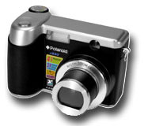
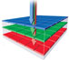

Foveon not dead
March 15, 2005 | Comments (0)

Foveon seems still alive. The first consumer level camera is introduced using an X3 sensor! Polaroid has annnounced the x530. A new feature in the chip is inhouse JPEG conversion. With previous X3 chips — like in the Sigma DSLRs — only the RAW format was supported. Thew camera delivers a resolution of 2432 x 1842 pixels, to a total of 4.5 mpix. I wonder if this results in 13 mpix RGB data or if this is scaled up already…

“The Polaroid X530 is the world’s premier digital-image maker, creating pictures with a quality that has never been seen before! This has all been made possible by the Foveon X3 direct image sensor which, based on the color film principle, captures all of the color information in three pixel layers”
“Those are my principles. If you don't like them I have others.” — Groucho Marx (1895-1977)
Copyright © 2003-2007 Janco Tanis. All rights reserved.
XHTML, CSS, RSS feeds. Powered by Movable Type. Hosted @Home with a domain by hostway.
XHTML, CSS, RSS feeds. Powered by Movable Type. Hosted @Home with a domain by hostway.
Comments
Janco said:
I wonder if this results in 13 mpix RGB data or if this is scaled up already…
It's scaled up. The sensor has three 1.5MP layers.
Its already scaled up. Its 1.5MP per layer. Better then a 1.5mp sensor, but unclear if its as good as 4.5 MP